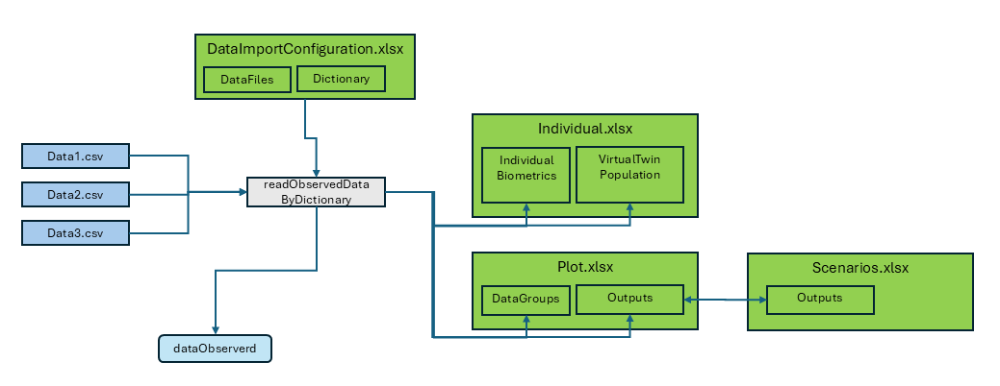

Data Import by Dictionary
DataImport_by_Dictionary.RmdOverview
This vignette provides a detailed guide to the data import process within the OSPSuite Reporting Framework package. The key aspects of the data import functionality are as follows:
Data Types: The package supports importing both observed time profiles and pharmacokinetic (PK) parameters, which can be processed as either aggregated or individual datasets.
File Format: Source files must be formatted as CSV tables.
Import Function: The primary function used for data import is
readObservedDataByDictionary.-
Configuration File: Data import configuration is managed through the “DataImportConfiguration.xlsx” file, which consists of:
- A
DataFilessheet listing all files to be imported. - Dictionary sheets that outline the import specifications and rules.
- A
-
Output: The import process generates two data.tables:
-
dataObserved: Contains time profile data. -
dataObservedPK: Contains PK parameter data.
-
-
Data Transfer: The import function also facilitates the transfer of additional data to other configuration sheets:
- It populates the
IndividualBiometricssheet inIndividuals.xlsxwith all available data. - It creates a new sheet,
VirtualTwinPopulation, inIndividuals.xlsxthat includes individual data suitable for generating a virtual twin population (refer to the Population vignette for more details). - It appends the output identifier and data group identifier, along
with all available data, to the corresponding sheets in
Plot.xlsxandScenario.xlsx.
- It populates the

Using the readObservedDataByDictionary Function
The readObservedDataByDictionary function plays a
pivotal role in the data import process within our package. It is
designed to read and process observed data based on the provided project
configuration and the data dictionary defined in an Excel template.
Here’s how to use the function and fill the Excel table for effective
data import:
Provide Project Configuration: The function requires the project configuration data to be passed as an argument. This configuration should include the necessary information for data import, such as the data importer configuration file and project configuration directory path.
Data Importer Configuration File: Ensure that the Excel template containing the data dictionary and data file information is available and accessible to the function. The data dictionary in the Excel template defines the mapping and conversion rules for the observed data.
Invoke the Function: Call the
readObservedDataByDictionaryfunction, passing the project configuration as an argument. The function will read the data files and process the observed data based on the provided dictionary and configuration. It will return the observed data as a data.table, ready for further analysis.
# Call the readObservedDataByDictionary function
observedData <- readObservedDataByDictionary(projectConfiguration)Filling the Excel Table
To effectively fill the Excel table for use with the
readObservedDataByDictionary function, follow these
guidelines:
DataFiles Sheet:
In the “DataFiles” sheet of the Excel template, provide the following information:
-
FileIdentifier: An identifier that can be used for filtering the file. -
DataFile: The path of the CSV file relative to the configuration Excel. -
Dictionary: The sheet name for the data dictionary. -
DataFilter: An R executable expression that filters relevant data for the study. If empty, no filter is applied. -
DataClass: Differentiate between time profiles and PK parameters, as well as aggregated and individual data.
Example
In the example below, we want to read data from three source files. “data1” and “data2” have the same format and use the same dictionary for the import, while “data3” uses the dictionary “tpDictionaryAggregated”. All used dictionaries must be part of the “DataImportConfiguration.xlsx.”
For data1, we need all rows; for the other two files, we
have defined filters. In data2, we want to exclude all
flagged with PKFLAG > 0, and in data3, we
want to exclude data from study 1234.
| FileIdentifier | DataFile | Dictionary | DataFilter | DataClass |
|---|---|---|---|---|
| data1 | relative/path/to/data1.csv | tpDictionary | tp Individual | |
| data2 | relative/path/to/data2.csv | tpDictionary | PKValue == 1 | tp Individual |
| data3 | relative/path/to/data3.csv | tpDictionaryAggregated | STUD != 1234 | tp Aggregated |
The first line of the sheet is not shown above; it contains descriptions for the columns. The information for the data import starts at line 2.
“tpDictionary” Sheet:
The configuration sheet provides two templates for dictionaries: “tpDictionary” and “pkDictionary”. They have the following columns:
targetColumn: Internal column name of the package.
-
type: Type of parameter used by the package. The following types exist:
-
identifier:
-
studyId: ID of the study. -
studyArm: Study arm. -
subjectId: ID of the subject within the study (not needed for aggregated data). -
individualId: Unique individual ID across all studies (not needed for aggregated data). -
group: Identifier for the data group, unique across all studies and data classes. -
outputPathId: Identifier for the output.
-
-
timeprofile (columns used to process time profiles): The columns
xValues,yValues,yUnit, andlloqare always mandatory. For aggregated data, the columnsyErrorValues,yErrorType,yMin,yMax,numberOfIndividuals, andnBelowLLOQare also available.-
time: Time values (unit specified in dictionary). -
yValues: Data value. -
yUnit: Unit of data value (also valid for all corresponding columns likelloq,yErrorValues). -
lloq: Lower limit for quantification. For values belowlloq, setyValuestolloq/2; if not available, set to NA.
-
yErrorType: Type of aggregation range. There are two defaults foryErrorType:-
ArithmeticStdDev: InterpretsyValuesas mean andyErrorValuesas standard deviation. -
GeometricStdDev: InterpretsyValuesas geometric mean andyErrorValuesas geometric standard deviation.
yMinandyMaxare ignored. For non-defaults,yErrorTypeis interpreted as legend; it should contain the description of the mean and the range, separated by a “|”.yErrorValuesare ignored, andyMinandyMaxare used. This can be used for median and percentiles. -
-
yErrorValues: Value of aggregation range. -
yMin: Lower range of aggregation range. -
yMax: Upper range of aggregation range. -
nBelowLLOQ: Number of values belowlloq. -
numberOfIndividuals: Number of values.
-
-
pkParameter (columns used to process PK parameters): The columns
valuesandUnitare always mandatory. For aggregated data, the columnserrorValues,errorType,minValue,maxValue, andnumberOfIndividualsare also available.-
values: Data value. -
unit: Unit of data value (also valid for all corresponding columns likeerrorValues). -
errorType: Type of aggregation range. The same defaults exist as foryErrorTypeof time profiles. -
errorValues: Value of aggregation range. -
minValue: Lower range of aggregation range. -
maxValue: Upper range of aggregation range. -
nBelowLLOQ: Number of values belowlloq.
-
-
biometrics: Columns used to create individuals; can also be used for covariate analysis. All columns are optional. The values are transferred to the ‘Individual.xlsx’ for further use. Available columns are:
-
age: Age. -
weight: Body weight. -
height: Body height. -
gender: Gender data should be coded as characters “Male” or “Female” (case insensitive) or numeric coding (1 = male, 2 = female). -
population: Population. Ensure to translate to one of the available PK-Sim populations (seeospsuite::HumanPopulation).
-
covariate: Columns used for covariate analysis. This is the only column type where the name of the target column can be freely assigned by the user. Covariates are optional rows.
metadata: Columns used to add information in the
DataGroupsheet in the plot configuration table. The information is used to generate the data import for PK-Sim.
-
sourceColumn: Name of the column in the source CSV.
sourceUnit: Unit of the column in the source CSV.
filter: An R executable expression that filters the source rows. Filters are executed in the order of this table.
filterValue: An R executable expression to set a value for the filtered rows.
By filling out the Excel table with the required information, you can
ensure that the readObservedDataByDictionary function can
effectively read and process the observed data based on the provided
data dictionary and configuration.
!!! ATTENTION: Do not use single quotes (’ ’) to capture strings. At the beginning of an Excel cell, single quotes will be ignored. Use double quotes (” “).
Example
This sheet is used for individual data.
The individualId is constructed as a concatenation of
study ID and individual ID. As we want to do this for all rows, the
filter is set to TRUE, and the R expression that performs
the concatenation is placed in the column filterValue.
The dictionary contains two rows for the target column
population. For the first entry, all data rows where the
source column RACENAME is “White” are set to
“European_ICRP_2002”, while for the second entry, individuals identified
as “Asian” are set to “Asian_Tanaka_1996”.
Values defined by filters are set sequentially in the order of the dictionary, so if a data row is selected by different filter conditions, the filter value at the bottom will define the final value.
The data contains the covariate country in the column
“COUNTRY”. Additionally, the metadata dose is
available.
| TargetColumn | Type | SourceColumn | SourceUnit | Filter | FilterValue | Description |
|---|---|---|---|---|---|---|
| studyId | identifier | STUD | character, study ID | |||
| studyArm | metadata | GRPNAME | character, unique over study, typically study arm | |||
| subjectId | identifier | SID | character, subject ID | |||
| individualId | identifier | TRUE | paste0(“I”,STUD,SID) | character, unique over all studies, ignored by aggregated Data | ||
| group | identifier | TRUE | paste(STUD, GRPNAME, “individual”, sep = “_“) | Must be unique over studies and dataclasses | ||
| outputPathId | identifier | MOLECULE | character, output ID | |||
| xValues | timeprofile | TIME | h | Time (0 = start of simulation in PK-Sim/Mobi) | ||
| yValues | timeprofile | DV | Units is coded in column “dvUnit” | |||
| yUnit | timeprofile | DVUNIT | character, dv Unit must be valid PK-Sim unit | |||
| lloq | timeprofile | LLOQ | for values below lloq set dv to lloq/2, if not available set to NA | |||
| age | biometrics | AGE | year(s) | optional, please provide source unit | ||
| weight | biometrics | WGHT0 | kg | optional, please provide source unit | ||
| height | biometrics | HGHT0 | cm | optional, please provide source unit | ||
| gender | biometrics | SEX | Use characters Male Female (case insensitive) or numeric coding 1=male 2= female | |||
| population | biometrics | RACENAME == “White” | “European_ICRP_2002” | character, PK Sim population name (get available list by calling ospsuite::HumanPopulation) | ||
| population | biometrics | RACENAME == “Asian” | “Asian_Tanaka_1996” | character, PK Sim population name (get available list by calling ospsuite::HumanPopulation) | ||
| species | biometrics | TRUE | “Human” | character, PK-Sim Species name (ospsuite::Species) | ||
| country | covariate | COUNTRY | example for covariate, please delete if not used | |||
| dose | metadata | DOSE | NA | meta data used for PK-Sim import, if not available, delete row or set all values to NA | ||
| molecule | metadata | TRUE | meta data used for PK-Sim import, if not available, delete row or set all values to NA | |||
| organ | metadata | TRUE | meta data used for PK-Sim import, if not available, delete row or set all values to NA | |||
| compartment | metadata | TRUE | meta data used for PK-Sim import, if not available, delete row or set all values to NA |
Other Data Formats
The plot functions in the package workflow for time profile plots
accept observed data in two formats: the data.table format
generated by the readObservedDataByDictionary function and
the DataCombined class format from the
ospsuite-R package.
The package also provides two functions to convert the data.table format to DataCombined and vice versa:
# Convert DataCombined back to data.table format
dataDT <- convertDataCombinedToDataTable(dataCombined)
# Convert data.table to DataCombined format
dataCombined <- convertDataTableToDataCombined(observedData)```